Single Neuron
Train an OR gate manually and understand forward propagation, loss, and gradient updates.
Follow a guided path from neuron training and backpropagation to recurrent sequence models, convolutional networks, and bearing-condition classification.
Begin with a single neuron, add hidden-layer reasoning, learn sequence memory with an RNN, then progress to image features and an industrial application.
Train an OR gate manually and understand forward propagation, loss, and gradient updates.
Use a 2–2–1 network to solve XOR and see why nonlinear models are required.
Build a one-neuron RNN and train it with backpropagation through time.
Build convolution, ReLU, pooling, flattening, and classification step by step.
Apply pretrained VGG16 features and partial fine-tuning to bearing images.
A complete step-by-step derivation of forward propagation, squared-error loss, backpropagation, and gradient-descent updates for a single sigmoid neuron.
| \(x_1\) | \(x_2\) | Desired output \(y_d\) |
|---|---|---|
| 0 | 0 | 0 |
| 0 | 1 | 1 |
| 1 | 0 | 1 |
| 1 | 1 | 1 |
The diagram below shows how the two inputs enter the neuron, how the weighted sum is formed, where the bias is added, and how the sigmoid function converts the net input into the neuron output.
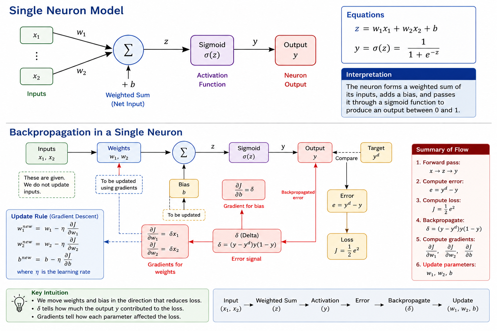
To update a parameter, we calculate how the loss changes with respect to that parameter. For \(w_1\), the chain rule gives:
This is the error signal propagated backward through the sigmoid neuron.
During the forward pass, information moves from the inputs toward the output. During backpropagation, the error signal moves in the opposite direction so that the model can determine how each weight and the bias affected the loss.
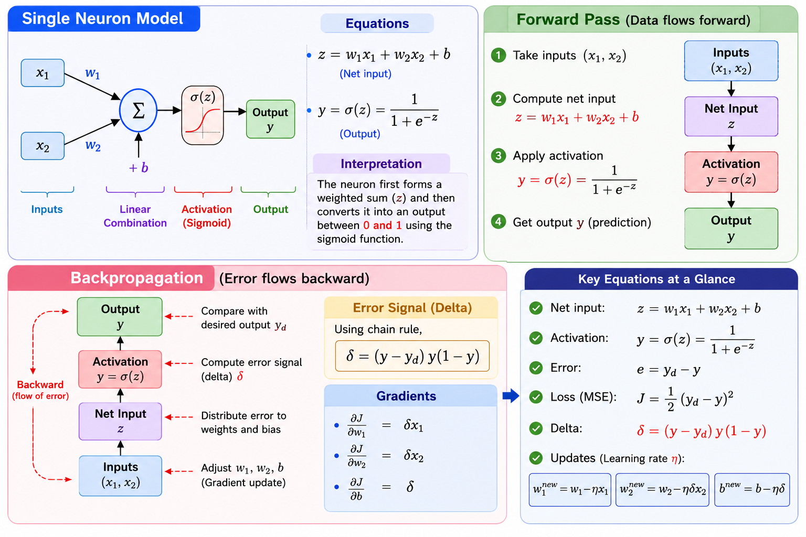
\[ (x_1,x_2)\rightarrow z\rightarrow y\rightarrow J \]
\[ J\rightarrow \delta\rightarrow \left( \frac{\partial J}{\partial w_1}, \frac{\partial J}{\partial w_2}, \frac{\partial J}{\partial b} \right) \]
The inputs themselves do not move backward. What moves backward is gradient information: a numerical measure of how strongly each parameter contributed to the current loss.
\[ \delta=(y-y_d)y(1-y) \] \[ \frac{\partial J}{\partial w_1}=\delta x_1,\qquad \frac{\partial J}{\partial w_2}=\delta x_2,\qquad \frac{\partial J}{\partial b}=\delta \]Initial parameters: \[ w_1=0,\qquad w_2=0,\qquad b=0 \]
| Iteration | Sample | \(y_d\) | \(y\) | \(\delta\) | Updated \(w_1\) | Updated \(w_2\) | Updated \(b\) |
|---|---|---|---|---|---|---|---|
| 1 | (0,0) | 0 | 0.5000 | 0.1250 | 0 | 0 | -0.1250 |
| 2 | (0,1) | 1 | 0.4688 | -0.1323 | 0 | 0.1323 | 0.0073 |
| 3 | (1,0) | 1 | 0.5018 | -0.1246 | 0.1246 | 0.1323 | 0.1319 |
| 4 | (1,1) | 1 | 0.5960 | -0.0973 | 0.2219 | 0.2296 | 0.2292 |
The epoch is repeated many times until the neuron learns parameters that classify all OR-gate inputs correctly.
Practice the complete OR-gate learning process interactively using the accompanying Google Colab notebook. Execute each cell, inspect the intermediate calculations, and observe how the weights and bias are updated during training.
Click the button below to open the notebook directly in Google Colab.
The XOR gate requires a hidden layer because its two output classes cannot be separated by a single straight decision boundary. We therefore use a 2–2–1 sigmoid neural network.
| \(x_1\) | \(x_2\) | Desired output \(y_d\) |
|---|---|---|
| 0 | 0 | 0 |
| 0 | 1 | 1 |
| 1 | 0 | 1 |
| 1 | 1 | 0 |
The hidden neurons must not begin with identical parameters. Unequal initial values break symmetry and allow the neurons to learn different internal features.
Online gradient descent is used: after each sample, all relevant parameters are immediately updated.
Because \(x_1=x_2=0\), all four input-to-hidden weight gradients are zero. Only the hidden biases change:
\[b_1'=0.30-0.5(0.017684)=0.291158,\qquad b_2'=0.60-0.5(0.018915)=0.590543\]This iteration starts with the parameters obtained after Iteration 1.
Here \(x_1=0\), so \(w_{11}\) and \(w_{21}\) do not change. Since \(x_2=1\):
\[w_{12}'=0.20-0.5(-0.002567)=0.201283\] \[w_{22}'=0.50-0.5(-0.002347)=0.501173\] \[b_1'=0.292441,\qquad b_2'=0.591716\]Here \(x_2=0\), so \(w_{12}\) and \(w_{22}\) remain unchanged. Since \(x_1=1\):
\[w_{11}'=0.10-0.5(-0.002705)=0.101353\] \[w_{21}'=0.40-0.5(-0.002539)=0.401269\] \[b_1'=0.293794,\qquad b_2'=0.592985\]| Iteration | Sample | Target | \(h_1\) | \(h_2\) | \(y\) | Loss | \(\delta_o\) |
|---|---|---|---|---|---|---|---|
| 1 | (0,0) | 0 | 0.574443 | 0.645656 | 0.860402 | 0.370146 | 0.103343 |
| 2 | (0,1) | 1 | 0.620379 | 0.748484 | 0.862711 | 0.009424 | −0.016261 |
| 3 | (1,0) | 1 | 0.596870 | 0.729427 | 0.860950 | 0.009667 | −0.016646 |
| 4 | (1,1) | 0 | 0.644839 | 0.816892 | 0.874316 | 0.382215 | 0.096076 |
The first epoch does not solve XOR. Repeating the same forward-pass, backpropagation, and update process gradually reduces the total loss.
Train the 2–2–1 network directly in the browser and inspect its four predictions.
Ready to train.
Build a one-hidden-neuron RNN using basic Python, train it with backpropagation through time, and classify six-step sequences as increasing or decreasing.
Increasing and decreasing sequences may contain the same values in a different order. An RNN processes one value at a time while carrying information from the previous time step in its hidden state.
\(\hat y\) is the probability that the sequence is increasing.
sequence = [0.1, 0.3, 0.5]
W_xh, W_hh, b_h = 1.0, 0.5, 0.0
h = 0.0
for x_t in sequence:
a_t = W_xh * x_t + W_hh * h + b_h
h = math.tanh(a_t)
print(round(a_t, 4), round(h, 4))
Each sample contains six values. Positive steps produce increasing sequences with target 1; negative steps produce decreasing sequences with target 0. Small random variations prevent direct memorization.
Balanced synthetic sequencesdef create_dataset(number_of_pairs=250, time_steps=6):
dataset = []
for _ in range(number_of_pairs):
start = random.uniform(-0.5, 0.5)
step = random.uniform(0.08, 0.18)
increasing, decreasing = [], []
for t in range(time_steps):
noise = random.uniform(-0.025, 0.025)
increasing.append(start + step * t + noise)
decreasing.append(start - step * t + noise)
dataset.append((increasing, 1))
dataset.append((decreasing, 0))
random.shuffle(dataset)
return dataset
Every hidden state is stored because the backward pass needs the complete time history. Only the final hidden state is passed to the output neuron.
Essential forward functiondef forward(sequence, parameters):
hidden_states = [0.0]
for x_t in sequence:
previous_h = hidden_states[-1]
a_t = (parameters['W_xh'] * x_t
+ parameters['W_hh'] * previous_h
+ parameters['b_h'])
hidden_states.append(math.tanh(a_t))
final_h = hidden_states[-1]
z = parameters['W_hy'] * final_h + parameters['b_y']
probability = sigmoid(z)
return probability, hidden_states
Before training, one decreasing sequence produced \(\hat y=0.533\). The uncertain prediction is expected because the five parameters are still randomly initialized.
Binary cross-entropy with a sigmoid output gives \(\partial L/\partial z=\hat y-y\). The error then moves from the final hidden state toward the first time step.
Each backward step also multiplies the error by \(W_{hh}\).
def gradients_for_one_sequence(sequence, target, parameters):
probability, hidden_states = forward(sequence, parameters)
gradients = {name: 0.0 for name in parameters}
d_z = probability - target
gradients['W_hy'] = d_z * hidden_states[-1]
gradients['b_y'] = d_z
d_h = d_z * parameters['W_hy']
for t in range(len(sequence) - 1, -1, -1):
h_t = hidden_states[t + 1]
h_previous = hidden_states[t]
d_a = d_h * (1.0 - h_t * h_t)
gradients['W_xh'] += d_a * sequence[t]
gradients['W_hh'] += d_a * h_previous
gradients['b_h'] += d_a
d_h = d_a * parameters['W_hh']
loss = binary_cross_entropy(target, probability)
return loss, gradients
def train(training_data, parameters, epochs=35, learning_rate=0.03):
loss_history = []
for epoch in range(epochs):
random.shuffle(training_data)
total_loss = 0.0
for sequence, target in training_data:
loss, gradients = gradients_for_one_sequence(
sequence, target, parameters)
total_loss += loss
for name in parameters:
clipped = max(-5.0, min(5.0, gradients[name]))
parameters[name] -= learning_rate * clipped
loss_history.append(total_loss / len(training_data))
return loss_history
| Epoch | 1 | 5 | 10 | 20 | 35 |
|---|---|---|---|---|---|
| Average loss | 0.5077 | 0.0538 | 0.0284 | 0.0155 | 0.0104 |
The final check uses the same six values in opposite orders. Changing only the order reverses the classification, demonstrating that the recurrent state has learned temporal direction.
| Sequence | \(P(\mathrm{increasing})\) | Prediction |
|---|---|---|
| −0.4, −0.2, 0.0, 0.2, 0.4, 0.6 | 0.999 | Increasing |
| 0.6, 0.4, 0.2, 0.0, −0.2, −0.4 | 0.003 | Decreasing |
An RNN repeatedly combines the current input with its previous hidden state. Training adjusts shared parameters so that the final hidden state retains information needed for the sequence-level prediction.
A from-scratch walkthrough of the CNN forward pass — built entirely with plain Python lists and loops so every operation is transparent. We take a small image matrix all the way through to a final class prediction, then repeat the pipeline on a real uploaded photograph.
Small values are dark pixels, large values are bright pixels. The 6×6 example below has a bright vertical region on the right — enough contrast to see how an edge-detecting kernel responds to it.
image = [
[0, 0, 0, 10, 10, 10],
[0, 0, 0, 10, 10, 10],
[0, 0, 0, 10, 10, 10],
[0, 0, 0, 10, 10, 10],
[0, 0, 0, 10, 10, 10],
[0, 0, 0, 10, 10, 10]
]
Without it, border pixels are touched by far fewer kernel positions than center pixels, and the output shrinks with every convolution.
def zero_padding(matrix, padding=1):
if padding == 0:
return [row[:] for row in matrix]
original_columns = len(matrix[0])
padded_columns = original_columns + 2 * padding
padded_matrix = []
for _ in range(padding):
padded_matrix.append([0 for _ in range(padded_columns)])
for row in matrix:
new_row = [0] * padding + list(row) + [0] * padding
padded_matrix.append(new_row)
for _ in range(padding):
padded_matrix.append([0 for _ in range(padded_columns)])
return padded_matrix
We applied this to both the synthetic matrix and a real uploaded photograph (padding it per RGB channel), and visualized the before/after with an interactive padding-width slider.
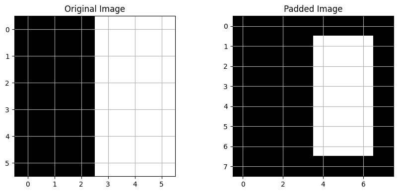
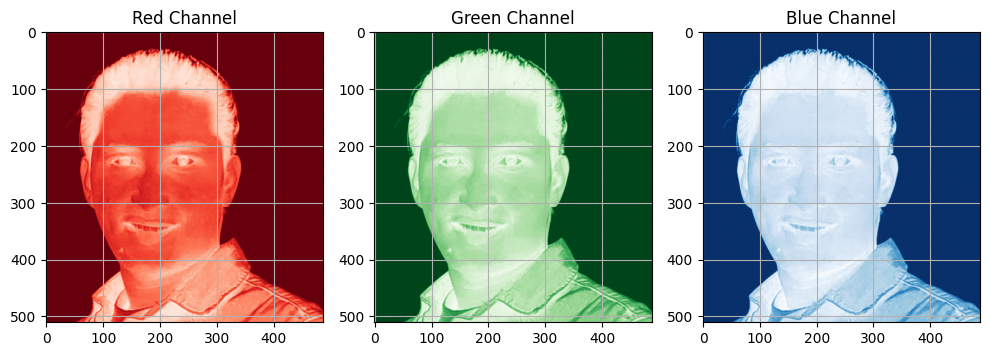
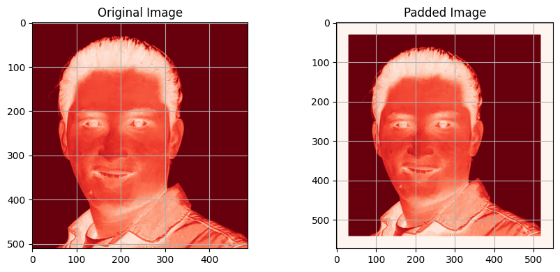
zero_padding() function, just a bigger matrix.A kernel (filter) is a small matrix that searches for a specific visual pattern. We used a vertical-edge kernel and worked through one convolution calculation by hand before generalizing it into a function that slides the kernel over the entire image.
vertical_edge_kernel = [
[-1, 0, 1],
[-1, 0, 1],
[-1, 0, 1]
]
\(N\) input size, \(F\) kernel size, \(P\) padding, \(S\) stride.
def convolution(image, kernel, p, s):
N, M = len(image), len(image[0])
frow, fcol = len(kernel), len(kernel[0])
I = math.floor((N - frow + 2 * p) / s + 1)
J = math.floor((M - fcol + 2 * p) / s + 1)
X = zero_padding([row[:] for row in image], p)
conv = [[0 for _ in range(J)] for _ in range(I)]
for i in range(I):
for j in range(J):
total = 0
for m in range(frow):
for n in range(fcol):
total += X[i * s + m][j * s + n] * kernel[m][n]
conv[i][j] = total
return conv
We reused this function to explore two things directly: how stride changes the output resolution (stride 1 vs. stride 2 on the same image), and how different kernels — vertical-edge, horizontal-edge, sharpen, blur — light up completely different patterns in the same input.
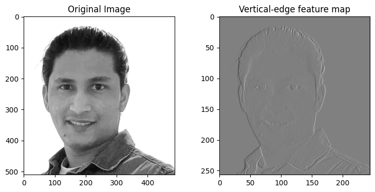
convolution() on a real photo — the feature map lights up wherever there's a strong left-right brightness change.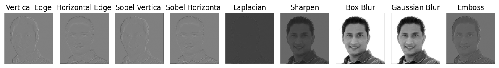
convolution() function, just a different 3×3 matrix of numbers.Convolution output can be negative wherever the kernel pattern is a poor match. ReLU (\(\max(0, x)\)) zeroes out those negative responses and introduces the non-linearity a network needs to represent more than straight lines.
ReLU on a sample vectorsample_values = [-8, -2, 0, 3, 10]
relu_values = []
for value in sample_values:
relu_values.append(value if value > 0 else 0)
# Before ReLU: [-8, -2, 0, 3, 10]
# After ReLU: [0, 0, 0, 3, 10]
We wrapped this into an apply_activation() helper and applied it element-wise
to full feature maps.
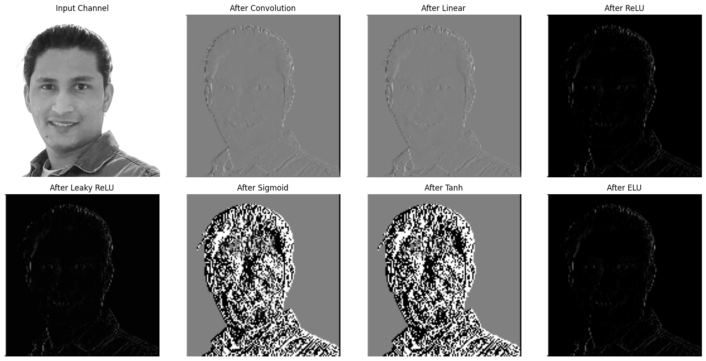
Pooling shrinks the spatial size of a feature map while keeping the strongest (max) or the typical (average) response in each window — reducing computation and adding a small amount of translation invariance.
Max poolingdef max_pooling(feature_map, pool_size=2, stride=2):
N, M = len(feature_map), len(feature_map[0])
I = (N - pool_size) // stride + 1
J = (M - pool_size) // stride + 1
pooled = [[0 for _ in range(J)] for _ in range(I)]
for i in range(I):
for j in range(J):
values = [
feature_map[i * stride + m][j * stride + n]
for m in range(pool_size) for n in range(pool_size)
]
pooled[i][j] = max(values)
return pooled
# average_pooling() follows the same pattern, using
# total / (pool_size * pool_size) instead of max(values)
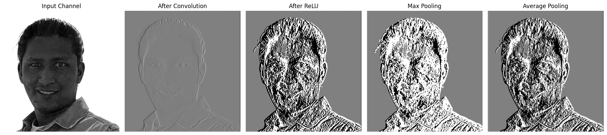
A real CNN repeats the same block — convolve, activate, pool — several times, each block operating on the output of the last. We packaged the three steps into one function and stacked it twice, watching the spatial size shrink at every stage.
Slide a kernel, produce a feature map.
Zero out negative responses.
Shrink the spatial size.
Repeat on the smaller map.
def feature_extraction_block(input_map, kernel,
convolution_padding=1, convolution_stride=2,
pool_size=2, pool_stride=2):
convolution_output = convolution(input_map, kernel,
p=convolution_padding, s=convolution_stride)
activation_output = apply_activation(convolution_output, relu)
pooling_output = max_pooling(activation_output, pool_size, pool_stride)
return convolution_output, activation_output, pooling_output
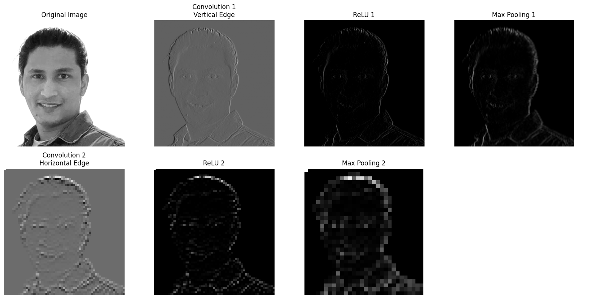
Once the feature map is small enough, it is flattened into a single vector, passed through a dense layer of randomly initialized weights, and converted into probabilities with softmax.
Flatten and dense layerdef flatten(feature_map):
flat_vector = []
for row in feature_map:
for value in row:
flat_vector.append(value)
return flat_vector
def dense(inputs, weights, bias):
outputs = []
for neuron in range(len(weights)):
total = bias[neuron]
for i in range(len(inputs)):
total += inputs[i] * weights[neuron][i]
outputs.append(total)
return outputs
Turns raw class scores \(z_i\) into probabilities that sum to 1.
def softmax(scores):
m = max(scores)
exponentials = [math.exp(s - m) for s in scores]
total = sum(exponentials)
return [v / total for v in exponentials]
def argmax(values):
max_i, max_v = 0, values[0]
for i in range(1, len(values)):
if values[i] > max_v:
max_i, max_v = i, values[i]
return max_i
argmax() then picks the highest-probability class as the prediction — the same
logic, in spirit, that sits at the output of a trained CNN classifier.
Every earlier piece was combined into a single cnn_forward_demo() function:
convolution → ReLU → pooling → flatten → dense → softmax → argmax. We ran it on a
"Good vs. Defective" two-class example, then ran the same convolution → ReLU → pooling
stages on a real photo uploaded from Google Colab to see the pipeline behave on genuine
image data.
def cnn_forward_demo(image, kernel, class_names):
conv_output = convolution(image, kernel, p=1, s=1)
relu_output = apply_activation(conv_output, relu)
pool_output = max_pooling(relu_output, pool_size=2, stride=2)
flat_output = flatten(pool_output)
weights, bias = generate_weights(len(flat_output), len(class_names))
class_scores = dense(flat_output, weights, bias)
class_probabilities = softmax(class_scores)
prediction = class_names[argmax(class_probabilities)]
return prediction, class_probabilities
| Stage | Shape |
|---|---|
| Original | 128 × 128 |
| Convolution (p=1, s=1) | 128 × 128 |
| ReLU | 128 × 128 |
| Max pooling (2×2, stride 2) | 64 × 64 |
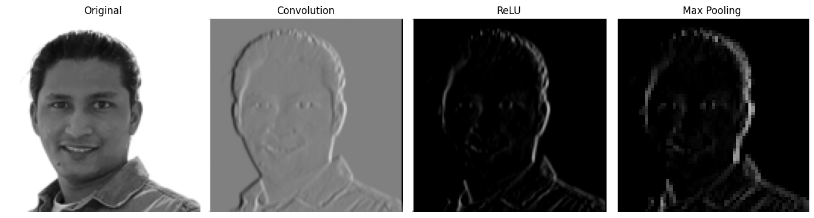
| Component | Main purpose |
|---|---|
| Image matrix | Represents pixel values |
| Padding | Preserves boundary information and controls output size |
| Kernel | Searches for a visual pattern |
| Convolution | Produces a feature map |
| Stride | Controls kernel movement and output size |
| ReLU | Removes negative responses and introduces nonlinearity |
| Pooling | Reduces spatial size while retaining important responses |
| Flatten | Converts a feature map into a vector |
| Dense layer | Combines extracted features for classification |
| Softmax | Converts class scores into probabilities |
| Argmax | Selects the most probable class |
In this notebook every kernel and every dense weight was set manually or generated randomly. In a trained CNN, these parameters are learned automatically from labeled data via backpropagation — the same mechanism derived by hand in the OR and XOR sections above.
Every function above — padding, convolution, ReLU, pooling, flattening, the dense layer, and softmax — is executable in the accompanying notebook, along with the real-image upload demonstration.
Click the button below to open the notebook directly in Google Colab.
A real two-class computer-vision project — sorting bearing photographs into
defective and good — built by reusing a pretrained VGG16 network
instead of training a CNN from scratch. Same convolution/ReLU/pooling building blocks from
the CNN section above; this time they come pre-trained on ImageNet.
The dataset is a folder of real bearing photographs split into train,
val, and test, each containing a defective and a
good class folder.
bearing_dataset/
├── train/
│ ├── defective/
│ └── good/
├── val/
│ ├── defective/
│ └── good/
└── test/
├── defective/
└── good/
| Split | Defective | Good | Total |
|---|---|---|---|
| Train | 2,193 | 552 | 2,745 |
| Validation | 91 | 22 | 113 |
| Test | 92 | 23 | 115 |
defective images than
good in training. This is corrected later with class-weighted loss rather than
by discarding data.
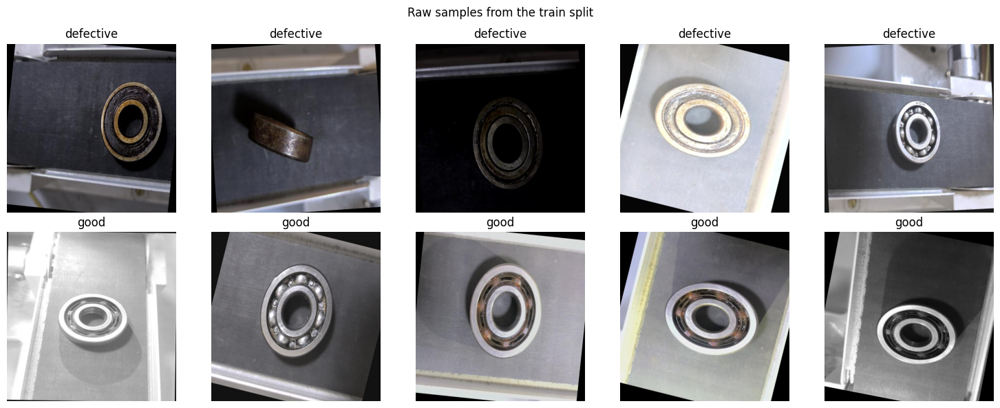
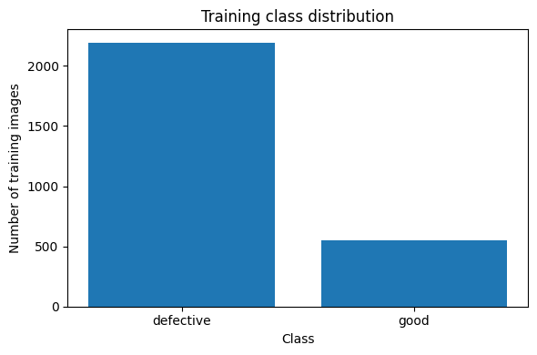
Training images get moderate random augmentation so the model doesn't memorize exact camera angles and lighting. Validation and test images use fixed, deterministic preprocessing. Both use the ImageNet mean/standard deviation, since that is what VGG16's pretrained weights expect.
Training vs. evaluation transformsIMAGE_SIZE = 224
IMAGENET_MEAN = [0.485, 0.456, 0.406]
IMAGENET_STD = [0.229, 0.224, 0.225]
train_transform = transforms.Compose([
transforms.RandomResizedCrop(IMAGE_SIZE, scale=(0.80, 1.00)),
transforms.RandomRotation(10),
transforms.ColorJitter(brightness=0.15, contrast=0.15),
transforms.RandomHorizontalFlip(p=0.5),
transforms.ToTensor(),
transforms.Normalize(mean=IMAGENET_MEAN, std=IMAGENET_STD)
])
evaluation_transform = transforms.Compose([
transforms.Resize(256),
transforms.CenterCrop(IMAGE_SIZE),
transforms.ToTensor(),
transforms.Normalize(mean=IMAGENET_MEAN, std=IMAGENET_STD)
])
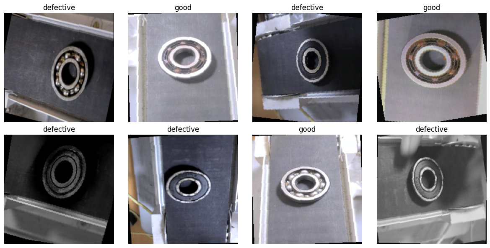
VGG16 splits into three parts: a convolutional feature extractor (13 convolution layers in 5 blocks, each followed by max pooling), an adaptive average pool, and a fully-connected classifier originally built for ImageNet's 1000 classes.
64 → 128 filters
256 filters × 3 layers
512 filters × 3 layers, twice
4096 → 4096 → 1000
For a 224×224 input, the feature extractor produces 512 feature maps of size 7×7:
\[ 512 \times 7 \times 7 = 25{,}088 \]That 25,088-length vector feeds VGG16's original classifier — and the new one built for this project.
Input shape : torch.Size([1, 3, 224, 224]) After features : torch.Size([1, 512, 7, 7]) After avgpool : torch.Size([1, 512, 7, 7]) After flattening : torch.Size([1, 25088])
Every pretrained parameter is frozen. VGG16's final Linear(4096 → 1000) layer
— built for 1000 ImageNet classes — is replaced with a fresh
Linear(4096 → 2) layer for defective/good, and only
that new layer is trained.
for parameter in model.parameters():
parameter.requires_grad = False
input_features = model.classifier[6].in_features
model.classifier[6] = nn.Linear(input_features, number_of_classes)
model = model.to(device)
defective: 0.626, good: 2.486) so the much rarer
good class isn't ignored during training.
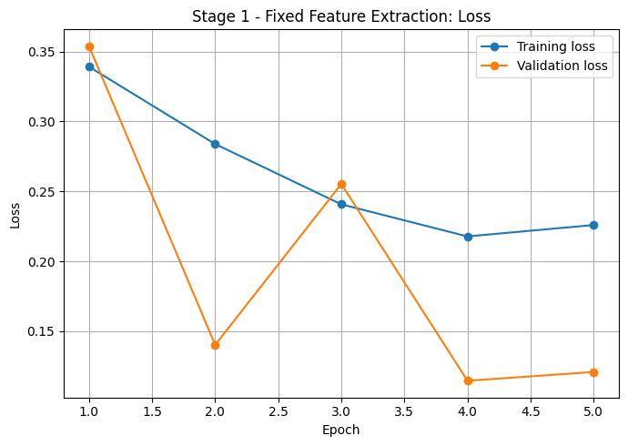
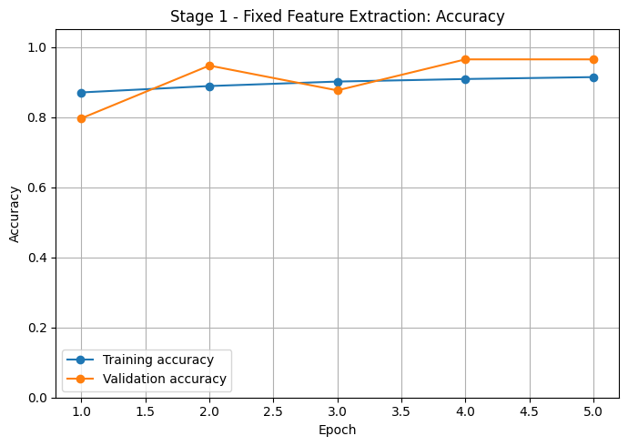
VGG16's final convolution block (Block 5, layers 24 onward) is unfrozen so the deepest, most task-specific features can adapt to bearing surfaces and defects. It trains with a much smaller learning rate than the classifier head, since pretrained features should move carefully rather than be overwritten.
Unfreeze Block 5, use two learning ratesfor parameter in model.features[24:].parameters():
parameter.requires_grad = True
stage_2_optimizer = optim.Adam([
{"params": model.features[24:].parameters(), "lr": 0.00001},
{"params": model.classifier[6].parameters(), "lr": 0.0001}
])
Best validation accuracy improves from
\[ 0.9646 \ \rightarrow\ 1.0000 \]Fine-tuning more parameters can improve accuracy further, but costs more training time and carries a higher overfitting risk on a dataset this small.
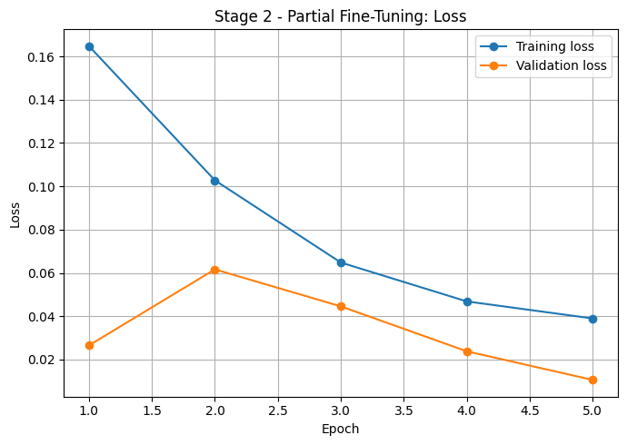
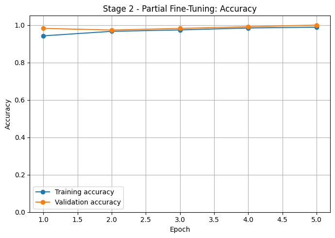
The test split is touched only once, after both training stages and model selection are complete — it was never used to tune anything.
| Class | Precision | Recall | F1-score | Support |
|---|---|---|---|---|
| defective | 1.0000 | 1.0000 | 1.0000 | 92 |
| good | 1.0000 | 1.0000 | 1.0000 | 23 |
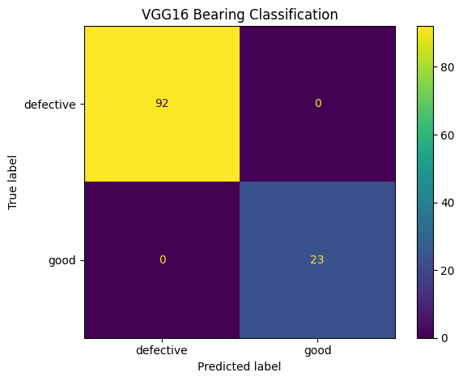
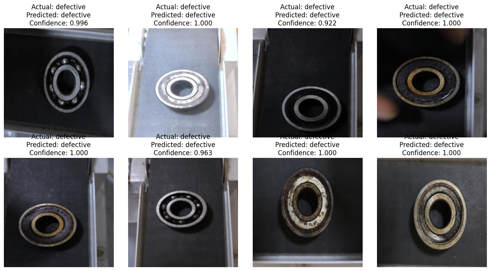
The same evaluation_transform from Part T2 is applied to a single newly
uploaded photograph, run through the trained model, and turned into a class prediction
with a confidence score via softmax — the same softmax used in the from-scratch CNN
section above.
def predict_single_image(model, image_path, transform, class_names, device):
image = Image.open(image_path).convert("RGB")
input_tensor = transform(image).unsqueeze(0).to(device)
model.eval()
with torch.no_grad():
outputs = model(input_tensor)
probabilities = torch.softmax(outputs, dim=1)
prediction = probabilities.argmax(dim=1).item()
return class_names[prediction], probabilities.cpu().numpy()[0]
On an unrelated bearing photo pulled from outside the dataset, the model predicted defective with 0.999 confidence.
evaluation_transform pipeline as the test set.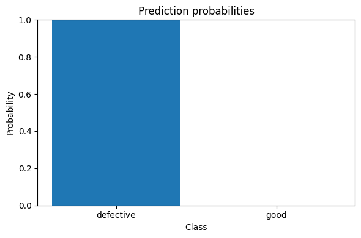
Only the new final layer is trained.
Block 5 and the new output layer are trained.
defective class?Run the complete transfer-learning workflow yourself — mounting the dataset, both training stages, test evaluation, and prediction on a new image — in the accompanying Colab notebook.
Click the button below to open the notebook directly in Google Colab.